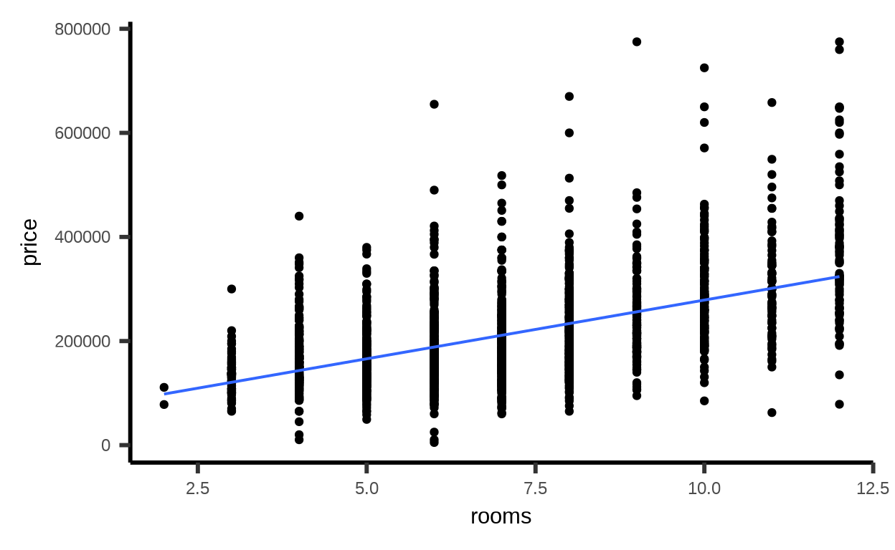
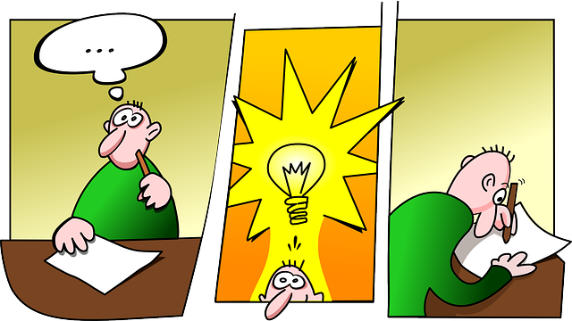
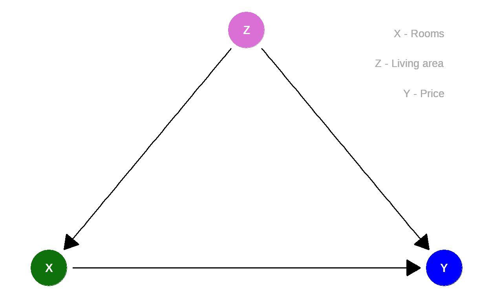

Learning objectives
In this module you will learn:
- that an observation does not always allow us to derive a suitable action.
Real estate price
What determines the value of a property?

Quelle: https://pixabay.com/de/photos/bauplan-grundriss-architektenplan-354233/
One factor that is particularly easy to determine is the number of rooms. This criterion is also often used for marketing in the USA.
In the R package mosaicData there is a data set containing real estate records: SaratogaHouses. It contains data on houses in Saratoga County, New York, USA, in 2006.
Let’s have a look at the relation between number of rooms (rooms) and price (price):
# Load data and packages
library(mosaic)
data(SaratogaHouses)
# scatter plot
gf_point(price ~ rooms, data = SaratogaHouses) %>%
gf_lm() # add regression line
As you can see: The average price increases with the number of rooms.
Linear regression - first attempt
Let us assume a linear relationship between rooms), \(\color{green}{x}\), and price), \(\color{blue}{y}\):
\[\color{blue}{y}_i = \beta_0 + \beta_1 \cdot \color{green}{x}_i + \epsilon_i\] \(\beta_1\) is the slope describing the linear relationship, \(\beta_0\) is the \(y\)-intercept
We can use the data to estimate the two coefficients \(\beta_0, \beta_1\):
erglm1 <- lm(price ~ rooms, data = SaratogaHouses)
erglm1##
## Call:
## lm(formula = price ~ rooms, data = SaratogaHouses)
##
## Coefficients:
## (Intercept) rooms
## 53016 22573Resulting in:
\[\hat{\color{blue}{y}}_i = 53016 + 22573 \cdot \color{green}{x}_i \]
If a house has 4 separated rooms according to the floor plan, rooms) is \(\color{green}{x}=\color{green}{4}\).
Thus, the estimated price is
\[\hat{\color{blue}{y}} = 53016 + 22573 \cdot \color{green}{4}= \color{blue}{143308}.\]

Quelle: https://pixabay.com/de/vectors/idee-erfindung-erfinder-denken-152213/
Now you could have a seemingly brilliant idea: Just divide the living room. One becomes two, \(4\) rooms turn into \(5\), \(do(\color{green}{x}=\color{green}{5})\). Then, according to the model:
\[\hat{\color{blue}{y}} = 53016 + 22573 \cdot \color{green}{5}= \color{blue}{165881}.\]
Repetition: Elements of Causal Diagrams
In Modules 4, 5 and 6 you have learned the basic elements of causal diagrams:
| Path | \(\color{green}{X} \rightarrow \color{violet}{Z} \rightarrow \color{blue}{Y}\) | \(\color{green}{X} \leftarrow \color{violet}{Z} \rightarrow \color{blue}{Y}\) | \(\color{green}{X} \rightarrow \color{violet}{Z} \leftarrow \color{blue}{Y}\) |
|---|---|---|---|
| Name | Chain | Fork | Inverted fork |
| Association between \(\color{green}{X}\) and \(\color{blue}{Y}\) | causal | non causal | no association |
| Role of \(\color{violet}{Z}\) | Mediator | Confounder | Collider |
| Adjustment of \(\color{violet}{Z}\) | Blocks causal path | Blocks non-causal path | Opens non-causal path |
How can we estimate causal effects from observational data, given these rules?
The basic idea: To estimate the change in \(\color{blue}{y}\) when \(\color{green}{x}\) is changed, all non-causal paths (forks) should be blocked. At the same time, causal paths (chains) should not be blocked. Moreover, non-causal paths (inverted forks) should not be opened. So while we should adjust for \(\color{violet}{Z}\) in a fork, this should not happen in a chain or inverted fork.
Considering the relationship between
Please think about it for a moment before you press Next.

In this simple graph, we can now focus on specific aspects.
Linear regression - second attempt
If living area is a confounder, we should adjust for this variable to estimate the causal effect of number of rooms.
livingArea. Complete the model accordingly.
lm(price ~ rooms, data = SaratogaHouses)lm(price ~ rooms + livingArea, data = SaratogaHouses)What do you notice?
# Model without living area
lm(price ~ rooms, data = SaratogaHouses)##
## Call:
## lm(formula = price ~ rooms, data = SaratogaHouses)
##
## Coefficients:
## (Intercept) rooms
## 53016 22573# Model with living area
lm(price ~ rooms + livingArea, data = SaratogaHouses)##
## Call:
## lm(formula = price ~ rooms + livingArea, data = SaratogaHouses)
##
## Coefficients:
## (Intercept) rooms livingArea
## 11691.6 783.6 111.0Given the
Even though this is still a highly simplified model, the estimated causal effect of the number of rooms on price is at least more realistic in the model with living area (price ~ rooms + livingArea) than in the one without (price ~ rooms). Of course, there may be additional confounders that should be taken into account.
Note
This course was supported by a grant from the German Federal Ministry of Education and Research, grant number 16DHBQP040. Förderkennzeichen 16DHBQP040 gefördert.